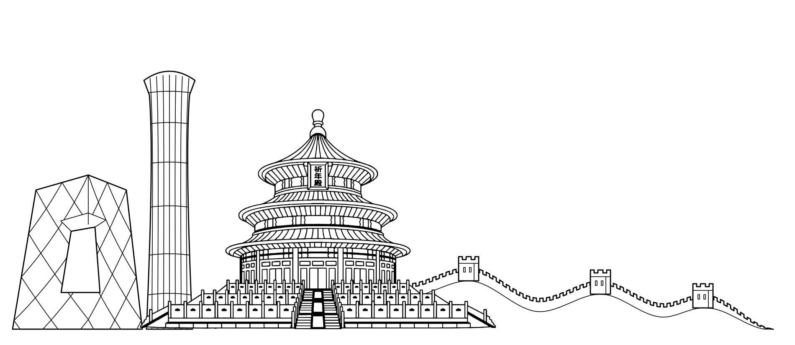
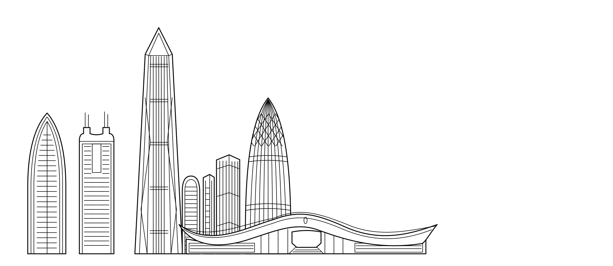
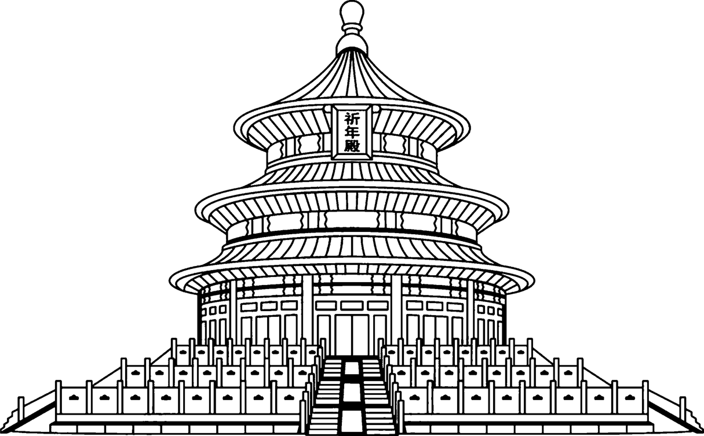
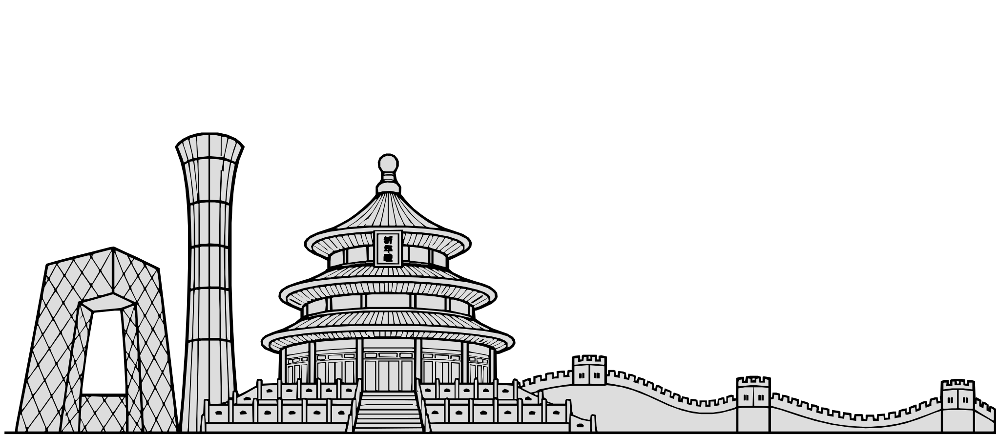
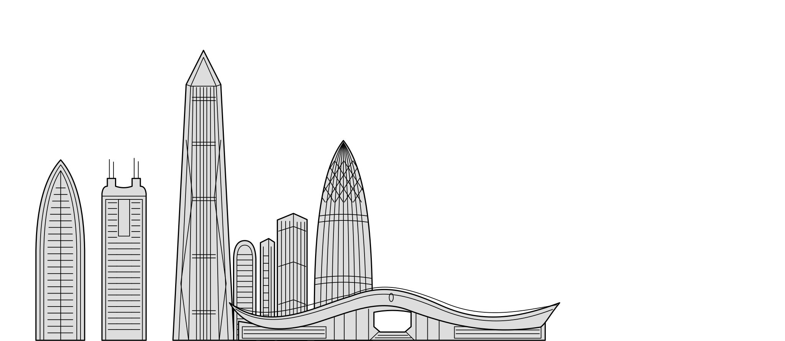
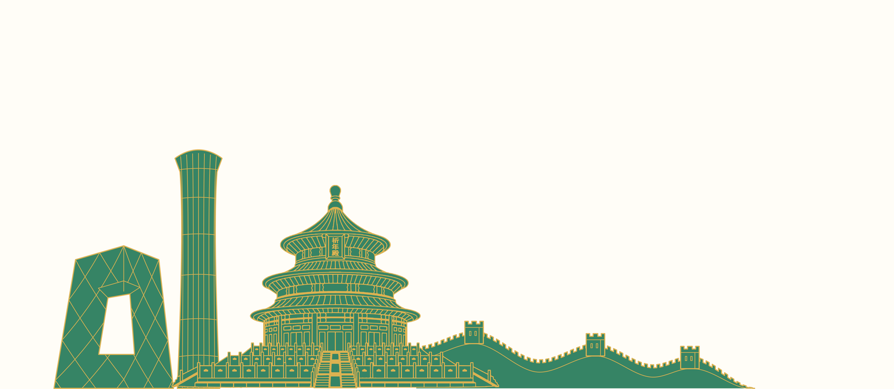
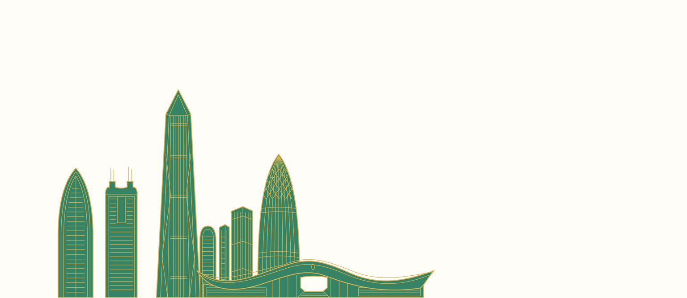

V5 · 城市结构母版与制作标准
北京与深圳先验证一套制作流程：每城共享结构，五色预设与自由调色，金线固定，彩釉至金属连续转换。先分别构建地标，再组合城市。北京祈年殿直接取自原 PSD，长城曲线落底；深圳移除右侧长桥，以市民中心自然收尾。定位底线不作为全图金线。
这是本地网页样板和图样复核资料。当前图样为逐建筑构建的 SVG；祈年殿是原 PSD 的轮廓路径，其余是可编辑矢量结构线。生成研究稿仍保留，但未直接接入。制造线宽与真实设备验收尚未确认。
北京：原图与地标重构
 原始附件1899 × 828，JPEG 白底；原文件保留。
原始附件1899 × 828，JPEG 白底；原文件保留。
北京：建筑单元组合1900 × 828 复核导出；SVG 母版 5433 × 2365。央视左脚不出线，长城末端顺曲线落底。线条参考

深圳：移除右桥后的建筑组合楼群、市民中心分单元重构；右侧不补桥或新建筑，保留自然留白。
原 PSD 天坛线条当前北京直接使用这一原始图层的线条轮廓，等比放置，独立建立填面。可编辑母版与填面检查

北京 SVG：灰色填面＋黑色结构线中央挑空保持留白。描线、填面与孔洞分组。
深圳 SVG：灰色填面＋黑色结构线市民中心中央开口、建筑间隙保持留白；右桥已移除。
北京填色边界检查
深圳填色边界检查下载统一 SVG 模板下载北京母版下载深圳母版
独立建筑单元
每个单元都分离填面与可见结构线，城市组合显式处理前后遮挡。查看单元与来源清单 · 祈年殿 · 央视大楼 · 长城曲线 · 平安大厦 · 市民中心屋顶
统一尺寸与处理顺序
| 阶段 | 尺寸／约定 |
|---|
| 原 PSD 城市区域 | 5433 × 2365 px，600 ppi；完整线稿画布 7016 × 4961 |
| 花纸拼版 | 6409 × 3858 px，400 ppi；用于固定装饰与相邻区域校核 |
| SVG 母版 | viewBox 0 0 5433 2365；底线、文字预留与结构分组 |
| 运行资源 | 4096 × 1783；共用结构遮罩、RGBA16F 法线及文字 |
| 用户创作 | 整片 HSL 调色＋0–100 材质转换＋0–2 倍视觉浮雕 |
逐一构建标志性建筑 → 组合、遮挡与自然收口 → 检查闭合填面与实际孔洞 → 编辑 SVG → 统一编译结构／高度／法线 → 两端与中间材质同机位检查 → 加入城市目录。调色不重新生成图样；法线仅由结构线派生。